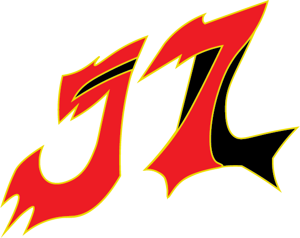
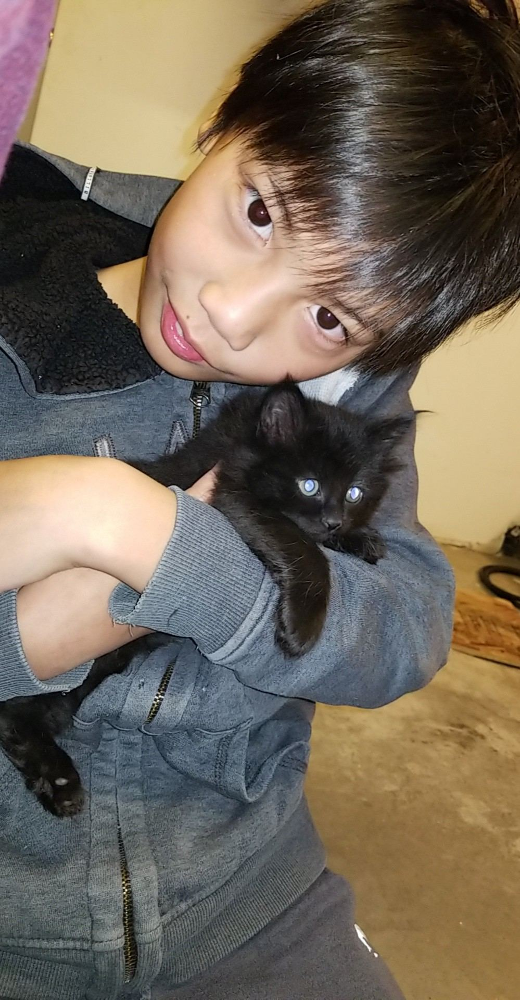
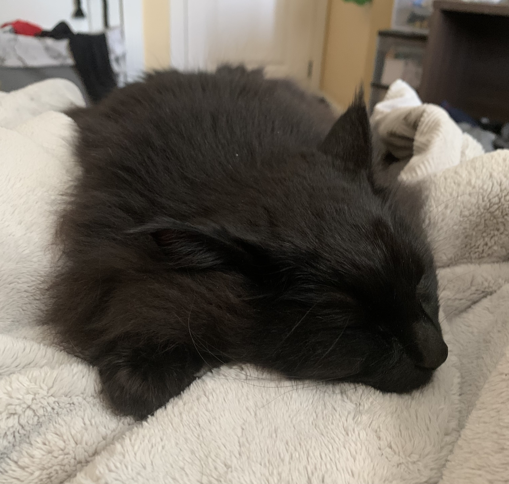
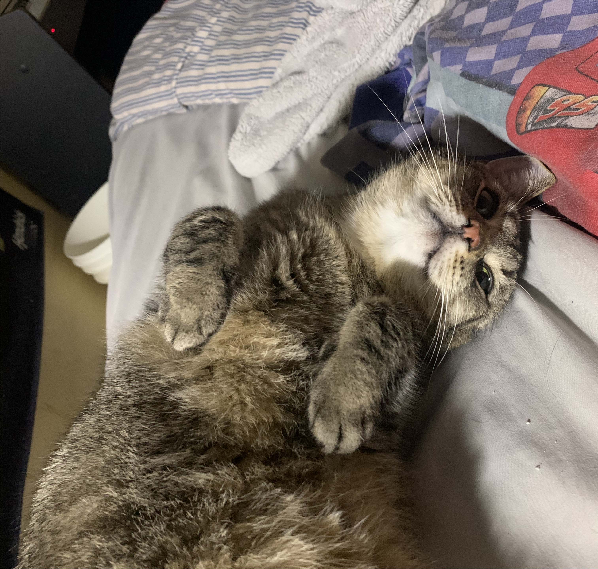
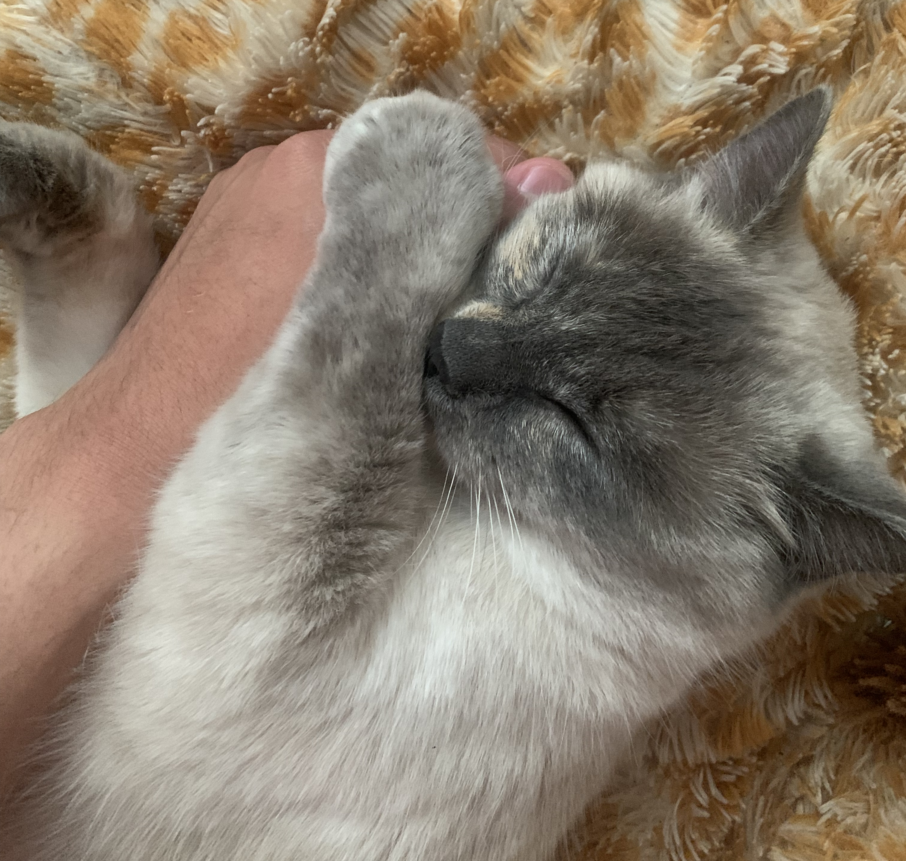
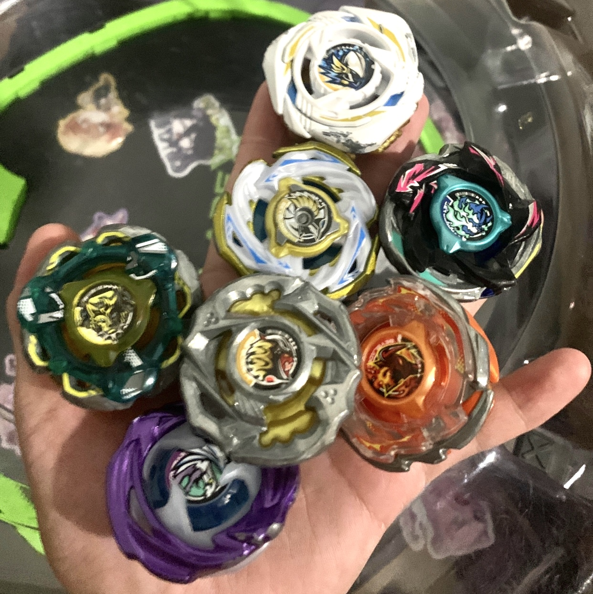
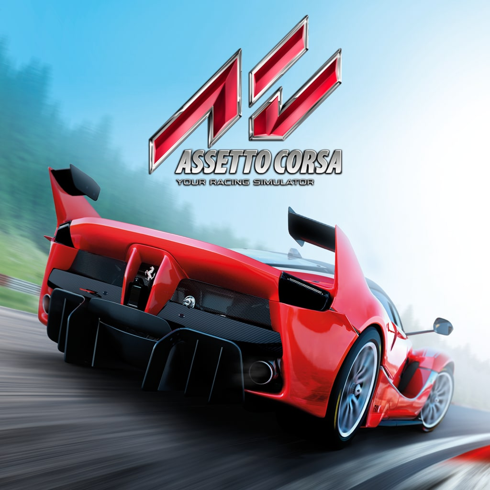
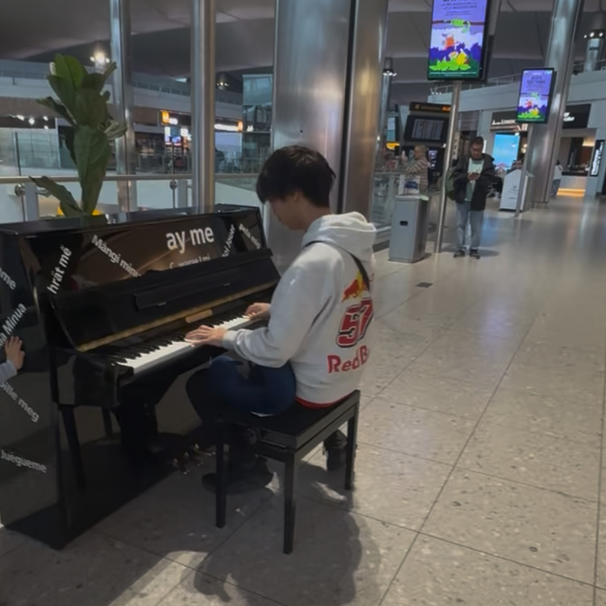

In 2019, I wanted a cat, but instead of one, we got two, Beans and Mittens. Beans is not my first cat, but she's been with us the longest. She's also the oldest of the three. However, despite being the oldest, she's quite a scaredy cat. So we gave her the nickname Chicken, ironically, whenever she gives us face rubs, she moves her head like how a chicken struts, so the similarities are only extremely close Beans has other nicknames, mostly just adjacent to beans, like Beany, and Bean-Bean.

Mittens (or Moo) is the cat that I got alongside Beans, they are both from the same mother. Moo is what we call her now since it's easier to remember than Mittens, Mittens is a generic cat name, so calling her Moo is a lot more original. Moo is a chill cat, she isn't overly crazy, or overly lazy, she's kind of just a chill cat. Her other nicknames include Mimi, Mimi-MooMoo, and just like Beans, we gave her a nickname based on another animal, this time Cow, because her name, and the fact that she's as chill as a cow on a farm.

This is my newest cat I got in September 2025, after a familiy friend could not take care of her because they had a bunch of dogs that would kill her. We took her in and she's been with the family ever since. The other two aren't exactly the kindest to her, but she's living a happy life. Like the other two cats, Gigi has a bunch of nicknames too. Names include Gi, O-Gi, and like how the other 2 are nicknamed after animals, we called her Rabbit because she likes to hop around.

In 2016 when my sibling and I were little, we got beyblades for the first time. 10 years later and I've spent over $7k on my beyblade collection. The image here is only a fraction of that. I've loved playing and collecting beyblades ever since 2016 thanks to my sibling. The game is simple, outlast your opponent, knock them out of the arena, or make them explode. With the latest generation of beyblades called Beyblade X, there are specific strategies and techniques not present in the previous generations of beyblade. Those strategies and techniques are what make beyblade a world favorite game across the world.

As a kid, I loved watching the Disney Cars movie, apparently when I was little in a car ride, my Mother told me they would play the movie on repeat every time. at least 3 times per road trip. I didn't know much about racing then besides Lightning Mcqueen, however now I watch a bunch of motorsports. I watch NASCAR and Formula 1, occasionally Indycar and WEC. I haven't raced in a racing sim all too much, but I did race one in august 2026, and I was pretty good. Since I watched a lot of racing, I knew more about the racing lines which made my lap times much much quicker.

When I was in middle school, I jokingly learned how to rickroll on a piano on the garage band app. That has since turned into me learning with a piano teacher. I've been playing the piano since 2022, while I don't play seriously with sheet music, I do play by ear, and by that, I mean I pick a song that has a piano cover on YouTube, and send it to my teacher, we then learn it step by step.